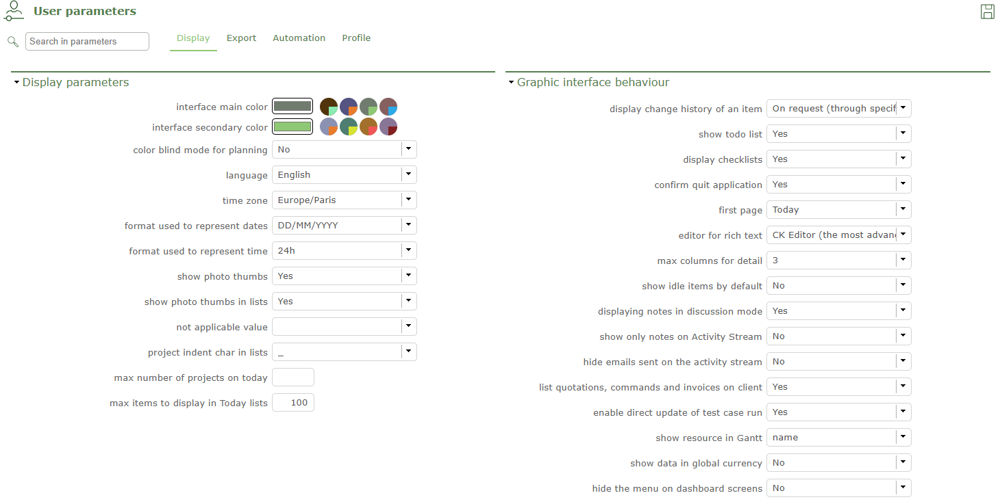
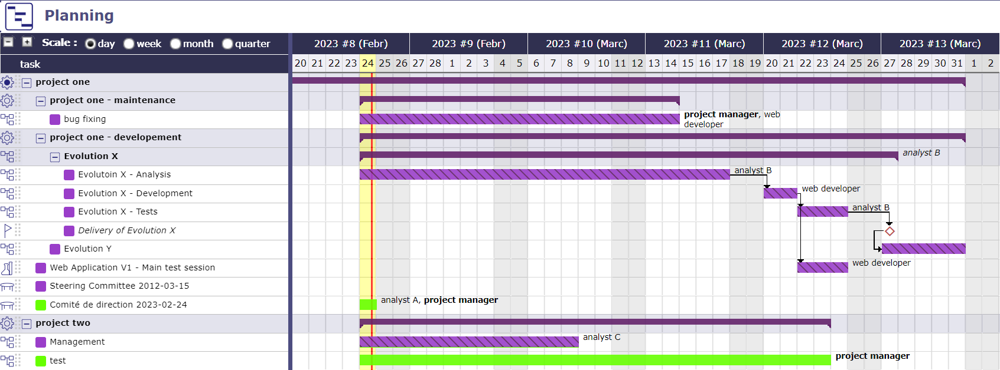
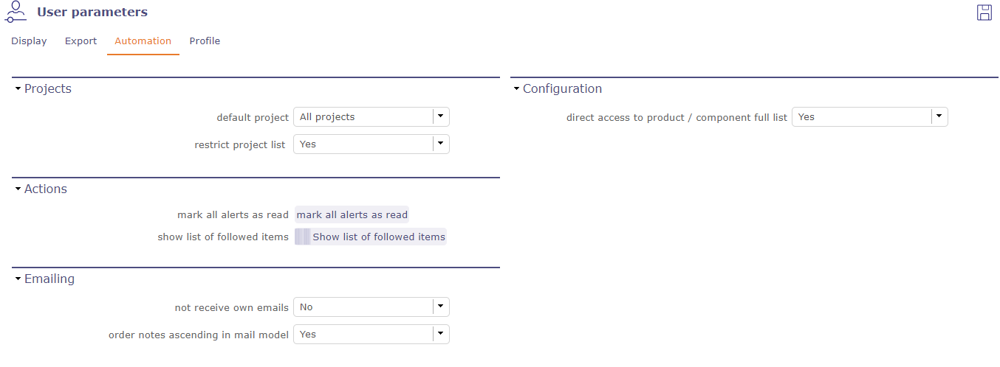

Paramètres utilisateur¶
L’écran Paramètres utilisateur vous permet de configurer des paramètres personnels, c’est-à-dire pour votre session personnelle.
Les paramètres sont organisés par onglet.
Vous pouvez accéder aux paramètres utilisateur en passant par le menu Configuration ou par la fenêtre de connexion.
Note
Les paramètres utilisateur sont effectifs même sans enregistrement.
L’enregistrement des paramètres récupérera les paramètres sélectionnés à chaque connexion.
Voir aussi
Onglet Affichage¶
Paramètre d’affichage générique pour l’utilisateur. Choisissez votre thème - Langue ou taille des icônes…
Vous permet de définir l’affichage de certains éléments de l’interface comme l’historique, les listes de contrôle, les éléments clos ou le style des notes
ou choisir des comportements par défaut comme la fermeture de la page ou le mode de basculement.

Paramètres d’affichage¶
Un système de couleurs pour les daltoniens peut être obtenu sur la vue de planification pour modifier les barres Gantt et les adapter à ce handicap.

Vue Gantt pour daltoniens¶
Voir aussi
Onglet Export¶
Dans cette section, vous définissez quelques paramètres simples d’export ou d’impression.
Onglet Automatisation¶
Projet sélectionné par défaut et choix du caractère (Définir sur « aucun » pour obtenir une liste plate) utilisé pour indenter les listes de projets, afin de représenter la structure WBS des projets et sous-projets.

Onglet Automatisation¶
Vous pouvez également voir tous les éléments pour lesquels vous êtes enregistré en suivi et les supprimer depuis cette fenêtre.
Onglet Profil¶
Une photo peut être définie pour un utilisateur, une ressource et un contact.
C’est une identification visuelle associée au nom.
Par défaut, la première lettre du nom apparaît tant que vous n’ajoutez pas de photo.
Gestion des photos
Parcourez votre PC pour trouver une image qui vous convient ou glissez-déposez dans la zone indiquée et validez.
Cliquez sur
 ou sur le cadre photo pour ajouter un fichier image. Pour compléter les instructions (voir : Fichier joint).
ou sur le cadre photo pour ajouter un fichier image. Pour compléter les instructions (voir : Fichier joint).Cliquez sur
 pour supprimer l’image.
pour supprimer l’image.Cliquez sur l’image pour afficher la photo dans son format d’origine.
Note
La gestion des photos peut également être effectuée dans les écrans Utilisateurs, Ressource, Contacts, thumbnails
Section Mot de passe¶
Cliquez sur Changer le mot de passe pour en définir un nouveau.